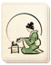

Requires
- Arts: 

Enables
Effects
- +10% to the success chance of missionary actions
- +5% to the success chance of Ikko monk actions
- +10% to the success chance of monk actions
Description
Scholarship demonstrates the state's commitment to religious tenets and is an important step towards constructing important religious buildings. Religion is woven into all aspects of Japanese life: family, community, politics, art and warfare are all affected and guided by faith. The foundation of Buddhist philosophy is man's relationship with the world and how to achieve harmony in life. The key is to understand and accept your place in the world, mirroring the harmony between heaven and earth.
Religion in feudal Japan was approached very differently from other parts of the world. Each major faith was seen as a separate path to a universal sacredness, and it was not unusual for the ideas of one faith to be folded into another as required. These requirements often came from the followers of a faith, not from central authority. There was a basic pragmatism that made religion useful and central to people's lives, a worthwhile way of living, rather than a preparation for rewards in the afterlife.